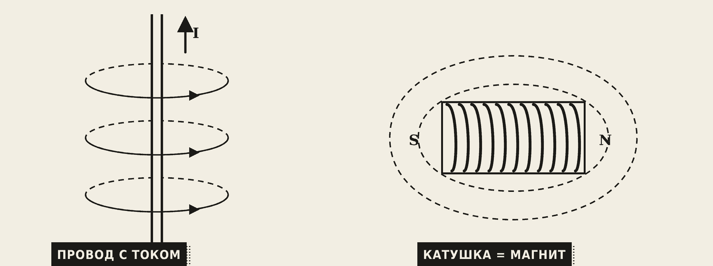
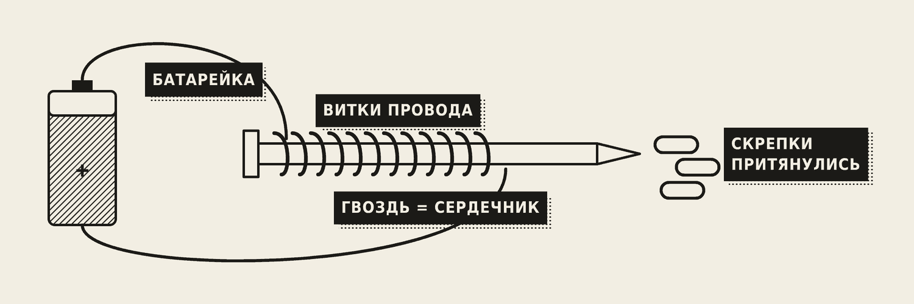
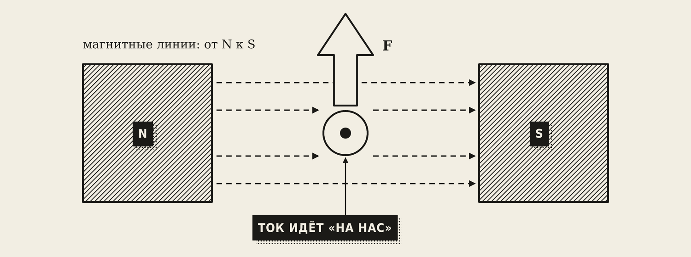

Что разберём
- Поле провода и катушки
- Магнитные материалы
- Сила Ампера
- Реле, стартер и форсунка
- Эталоны в тетрадь
- Самопроверка и домашнее задание
1 Ток создаёт магнитное поле
Рядом с проводом, по которому идёт ток, есть магнитное поле. Его можно заметить по отклонению магнитной стрелки. На рисунке линии вокруг прямого провода — замкнутые окружности. Если изменить направление тока, направление поля тоже изменится.
Правило буравчика связывает эти направления: правый винт движется по условному току, а его вращение показывает направление поля. Точка на срезе провода означает ток к нам, крест — от нас. Для точки линии идут против часовой стрелки.
Если свернуть провод в катушку, поля витков складываются. У катушки появляются северный и южный полюса. Согните пальцы правой руки по току в витках: большой палец покажет северный полюс. Ферромагнитный сердечник усиливает поле при том же токе, но при больших токах наступает насыщение.

Какими величинами описывают поле
Магнитная индукция B измеряется в теслах и характеризует поле по силовому действию. Напряжённость H измеряется в амперах на метр. Магнитная проницаемость μ описывает связь поля и материала. В линейном приближении B = μH. Для стали эта связь не одинакова при всех токах: материал имеет насыщение и гистерезис.
Магнитный поток Φ измеряется в веберах. Для однородного поля, перпендикулярного площадке, Φ = B·S. Площадь подставляют в м². Пример: B = 0,20 Тл, S = 4 см² = 0,0004 м². Тогда Φ = 0,00008 Вб = 80 мкВб.
Обычный мультиметр не измеряет B напрямую. Им можно проверить питание и цепь катушки. Для измерения поля нужен специальный датчик или тесламетр.

2 Материал выбирают по его задаче
Железо, многие стали и никель относятся к ферромагнетикам. Они могут сильно намагничиваться. Магнитомягкий материал нужен там, где поле следует быстро включать и выключать: например, в сердечнике обычного реле. Магнитотвёрдый — для постоянного магнита, который сохраняет намагниченность без питания.
Гистерезис означает, что магнитное состояние зависит от предыстории. При уменьшении H до нуля может сохраниться остаточная индукция B. Чтобы B стала нулевой, требуется поле обратного направления. Узкую петлю обычно связывают с магнитомягкими материалами, широкую — с магнитотвёрдыми.
Слово «магнитотвёрдый» не говорит, трудно ли поцарапать деталь. Это магнитное свойство. Притяжение обычным магнитом также не показывает точную марку стали и не доказывает исправность реле.
3 Поле действует на проводник с током
На проводник с током в магнитном поле действует сила Ампера. Если проводник расположен поперёк поля, F = B·I·l. Здесь l — длина активного участка в поле, в метрах. Вдоль поля сила равна нулю.
Направление определяют левой рукой: линии поля входят в ладонь, четыре пальца направлены по условному току, большой палец показывает силу. При изменении только тока или только поля сила меняет направление.
В рамке токи на противоположных сторонах направлены по-разному. Силы создают вращающий момент. Так можно объяснить основу работы двигателя стартера или стеклоочистителя. Реальный двигатель содержит систему переключения тока и множество проводников.
Задача из билета 11: B = 0,8 Тл, I = 250 А, l = 8 см = 0,08 м, проводник поперёк поля. F = 0,8·250·0,08 = 16 Н. Это сила на заданном участке, а не момент всего стартера.

4 Катушка управляет контактами
Электромагнит — катушка, обычно с сердечником, которая создаёт управляемое током поле. Её магнитодвижущая сила ℱ = N·I, где N — число витков. Не путайте ℱ в ампер-витках и механическую силу F в ньютонах.
В рассматриваемом четырёхконтактном нормально разомкнутом реле выводы 85 и 86 относятся к обмотке, 30 и 87 — к силовым контактам. Ток фар проходит через контакты, а не через обмотку. Катушка и контакты связаны механически. Схему всегда читают на корпусе конкретной детали.
Если в реле встроен защитный диод, нужно соблюдать полярность. В показанной схеме 86 подключён к плюсу, 85 — к минусу. Есть другие типы реле, например с контактом 87a, поэтому расположение ножек на глаз не заменяет маркировку.
В установившемся режиме ток обмотки I = U/R. Если U = 12 В и R = 80 Ом, то I = 0,15 А, P = U·I = 1,8 Вт. Это численный пример, не универсальная норма всех автомобильных реле.
Втягивающее реле и электромагнитная форсунка
Втягивающее реле стартера перемещает привод к венцу маховика и замыкает силовые контакты двигателя. В распространённой конструкции используются втягивающая и удерживающая обмотки. В браузере показаны состояния «покой», «втягивание», «удержание» и «возврат».
У электромагнитной форсунки ток перемещает клапан. Управление задаёт ЭБУ. Это объяснение принципа: самостоятельно включать форсунку или запускать стартер от АКБ в рамках этого занятия нельзя. Случайная подача питания может повредить деталь или привести к травме.
5 Почему щелчка недостаточно
Реле может щёлкать, но силовой контакт при этом имеет большое сопротивление. Под нагрузкой на контакте теряется напряжение, лампа светит слабее, а контакт нагревается. Это тот же лишний резистор, который мы обсуждали на занятии о «плохой массе».
Учебный пример: ток 4 А, падение на контакте 0,40 В. Rконт = 0,40/4 = 0,10 Ом, Pконт = 0,40·4 = 1,6 Вт. Сопротивление измеряют без питания, падение напряжения — при включённой нагрузке. Допустимые значения для реального изделия берут из его документации.
В виртуальном стенде пять случаев: исправное реле, обрыв катушки, отсутствие её питания, плохой контакт и сварившиеся контакты. Сначала снимите показания, затем сформулируйте диагноз. Чтобы найти сварившиеся контакты, снимите команду: нагрузка продолжит работать.
Эталоны в тетрадь
Магнитное поле и его параметры
- Определение. Магнитное поле действует на движущиеся заряды и проводники с током. Его создают токи и постоянные магниты.
- Формулы и единицы. B — магнитная индукция, Тл; Φ — магнитный поток, Вб; H — напряжённость, А/м; μ — магнитная проницаемость. Для однородного поля поперёк площадки Φ = B·S. В линейном приближении B = μ·H, где μ = μ₀·μᵣ. Для ферромагнетика μ не является постоянной во всех режимах.
- Рисунок. Вокруг прямого провода линии поля замкнуты. Правило буравчика: поступательное движение по току, вращение по линиям поля. У катушки согнутые пальцы правой руки направлены по току витков, большой палец указывает её северный полюс.
- Где в машине. Обмотка реле и обмотка возбуждения генератора создают магнитное поле.
- Как проверить. Наличие и направление поля качественно показывает компас или датчик поля. Мультиметром проверяют питание и цепь обмотки; непосредственно B обычный мультиметр не измеряет.
Магнитные материалы
- Определение. Ферромагнетики сильно намагничиваются: железо, многие стали и никель. Магнитные свойства зависят от материала, температуры и предыстории намагничивания.
- График. Гистерезис — зависимость B не только от текущего H, но и от предыстории. При H = 0 может сохраняться остаточная индукция. Обратное поле, необходимое для B = 0, характеризует коэрцитивную силу.
- Рисунок. На осях H и B нарисовать узкую и широкую петли: это качественное сравнение материалов, без численного масштаба.
- Где в машине. Магнитомягкий сердечник реле легко намагничивается и размагничивается; магнитотвёрдый материал нужен постоянному магниту, например в некоторых малых электродвигателях.
- Как проверить. Осмотреть сердечник, зазор, пружину и возврат якоря на снятом учебном реле. Притяжение магнитом не определяет марку материала или исправность детали. Обычный мультиметр не измеряет магнитную проницаемость.
Сила Ампера и принцип двигателя
- Определение. На проводник с током в магнитном поле действует сила Ампера.
- Формула. F = B·I·l при проводнике, перпендикулярном полю; B в Тл, I в А, активная длина l в м, F в Н. Для проводника вдоль поля сила равна нулю.
- Рисунок. Поле от N к S входит в ладонь левой руки, четыре пальца по условному току, большой палец показывает силу. На противоположные стороны рамки действуют силы, создающие вращающий момент.
- Где в машине. В электродвигателе стартера или стеклоочистителя электрическая энергия превращается в механическую.
- Как проверить. На учебной модели изменить только направление тока или только поля: сила изменит направление. В автомобиле проверяют питание и ток двигателя по документации; силу Ампера мультиметром не измеряют.
Электромагниты в автомобиле
- Определение. Электромагнит — катушка, обычно с ферромагнитным сердечником, создающая управляемое током поле. Реле использует это поле для перемещения якоря и переключения контактов.
- Формулы. Магнитодвижущая сила ℱ = N·I (А·виток). Ток обмотки в установившемся режиме I = U/R. Увеличение N·I усиливает намагничивание, но нагрев, зазор и насыщение ограничивают результат.
- Схема. У рассматриваемого нормально разомкнутого автомобильного реле 85 и 86 — обмотка, 30 и 87 — силовые контакты. Для показанного реле с защитным диодом 86 — плюс, 85 — минус; всегда сверять схему на корпусе.
- Где в машине. Реле включает фары или вентилятор; втягивающее реле стартера перемещает привод и замыкает силовые контакты; электромагнитная форсунка управляет клапаном.
- Как проверить. Обесточенное снятое реле: измерить сопротивление 85–86, сравнить с паспортом, проверить исходное состояние 30–87. На учебном стенде подать номинальное питание с ограничением тока и правильной полярностью, проверить переключение и падение напряжения на контактах под нагрузкой. Щелчок сам по себе исправность не доказывает.
Словарик
Якорь — подвижная часть электромагнитного реле. Плунжер — перемещающийся сердечник. Нормально разомкнутый контакт открыт без питания катушки. Гистерезис — зависимость магнитного состояния от его предыстории. Насыщение — режим, при котором дальнейшее увеличение намагничивающего поля даёт значительно меньший прирост индукции.
Проверь себя
Сначала ответьте сами. Нажмите вопрос для проверки. В печатной версии ответы находятся в конце.
1. Что означают точка и крест на срезе провода?
Точка — ток к нам, крест — от нас.
2. Какое условие нужно для формулы Φ = B·S?
Поле однородно и перпендикулярно площадке; площадь выражена в м².
3. Может ли при H = 0 остаться магнитная индукция?
Да, у ферромагнетика возможна остаточная индукция.
4. Какой материал нужен сердечнику обычного реле?
Магнитомягкий: он легко намагничивается и размагничивается.
5. Чему равна сила при B = 0,5 Тл, I = 4 А, l = 0,10 м поперёк поля?
F = 0,5·4·0,10 = 0,20 Н.
6. Где ток управления и где ток нагрузки в реле?
Управление — в катушке 85–86; нагрузка — через контакты 30–87.
7. Зачем выключать команду при диагностике?
Так можно обнаружить сварившиеся контакты: нагрузка не отключится.
8. Почему щелчок не доказывает исправность реле?
Якорь может двигаться, но контакты могут иметь обрыв или повышенное сопротивление.
Домашнее задание
Попросите нейросеть объяснить включение фар через четырёхконтактное нормально разомкнутое реле 12 В. Сохраните ответ и нарисуйте собственную схему. Проверьте четыре пункта: выводы 85–86 и 30–87, разделение двух цепей, защита силовой ветви, полярность при наличии диода. Для каждого напишите вывод и объяснение. Если ошибок нет — подтвердите правильные пункты. Это работа со схемой, ничего подключать к автомобилю не нужно.
Попробуйте в лаборатории
Поле катушки · Реле · Стартер · Проверка неисправностей · Тест
Выберите вариант по номеру в журнале. Запишите измерения и объясните диагноз двумя наблюдениями.
Источники автомобильных схем
HELLA — Relays and Relay Devices, устройство и маркировка реле; DENSO — устройство стартера. Программа и коды вопросов — карта курса ТОРА-26. Значения виртуального стенда учебные.
Ответы к самопроверке
- Точка — ток к нам, крест — от нас.
- Поле однородно и перпендикулярно площадке; площадь выражена в м².
- Да, у ферромагнетика возможна остаточная индукция.
- Магнитомягкий: он легко намагничивается и размагничивается.
- F = 0,5·4·0,10 = 0,20 Н.
- Управление — в катушке 85–86; нагрузка — через контакты 30–87.
- Так можно обнаружить сварившиеся контакты: нагрузка не отключится.
- Якорь может двигаться, но контакты могут иметь обрыв или повышенное сопротивление.